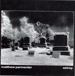

| Artist: | Matthew Parmenter |
| Title: | Astray |
| Label: | Strung Out Records SOR 6604 |
| Length(s): | 68 minutes |
| Year(s) of release: | 2004 |
| Month of review: | [08/2005] |
| 1) | Now | 9.59 |
| 2) | Distracted | 7.39 |
| 3) | Dirty Mind | 9.21 |
| 4) | Another Vision | 7.08 |
| 5) | Some Fear Growing Old | 6.56 |
| 6) | Between Me And The End | 5.58 |
| 7) | Modern Times | 21.09 |
Distracted is the next one up. The vocal melodies have a certain style, immediately recognizable as Parmenter/Discipline. The tone is somber, somewhat bouncy, the lyrics coming out slowly. A previous listen gave me the idea that Parmenter had turned to the singer songwritergenre. This partly the case, but not as far as I thought, there is still a lot of Discipline here, although the symphonic outburst occur less frequently. For a song of its length, there is not much variation, mainly some mellotron in between the prominent vocal lines. The tron gets higher and higher, more and more urgent, the vocals stay the same. Only slightly before the six minute mark do we get a break. The link to Hammill is quite strong here. The vocals of Parmenter are quite different, warm and never harsh, but the feel is the same.
With Dirty Mind the somber tone of the album continues. The vocal melody is a bit sixties like and bluesy, but there is always a menacing undercurrent. The piano is in the lead, occasionally does the guitar thrusts in. Halfway the typical VDGG repetitiveness sets in, with the violin taking the lead and the guitar evoking Fripp. The contrast between the lightness of the piano, almost as if coming from a fifties Hollywood movie, and the tense rumbling bass, is quite extreme. The best track so far.
With Another Vision we come to friendlier waters, with the guitar running round in circles, Parmenter's somber voice very low. This is quite close to singersongwriter type music, and the closest so far we have come to Peter Hammill. A song, slow and strong as the ocean. The middle part revolves around slow organ playing.
Some Fear Growing Old is a bit hesitant, a bit airy. The vocals seems a bit far away, or are they close by? Again, an excellent vocal melody, especially in the chorus, dominates this slow moving, bouncy track, on which stumming guitar and the like set the tone. In fact, the music is only a backdrop for the vocals. The violin adds his two cents of sadness to the song, evoking Stuart Gordon's playing with Hammill. A moving song, which may at time evoke the spirit of Gabriel.
However nothing could have prepared me for Between Me And The End, which is a timeless piece of music. Songs like these are hard to explain: it contains piano, saxophone, varied vocals, quite a few vocal melodies; it's moving, it shows emotion hardly under control, but how to render the magic?
Modern Times is the closing song of the album, well song, it attains a length of over 20 minutes. Striking is the presence of electric guitar, the vocal lines are typically Hammill. Modern Times might as well be Parmenter's take on Hammill's Flight. Of the songs on the album, it is certainly the loudest. The rowdy guitars refer more to hardrock than to progrock though. And then abruptly we move into, very strikingly, Yes territory with Squire like bass playing (think Roundabout), lined by washes of mellotron. This is pure symphonic rock, with even a nod to Spock's Beard. The sinister vocals halfway hearken back to the early days of VDGG (or Proto-Kaw if you like). The final five minutes are mainly instrumental. All the variation typical of progrock seems to have ended up in this one tune.